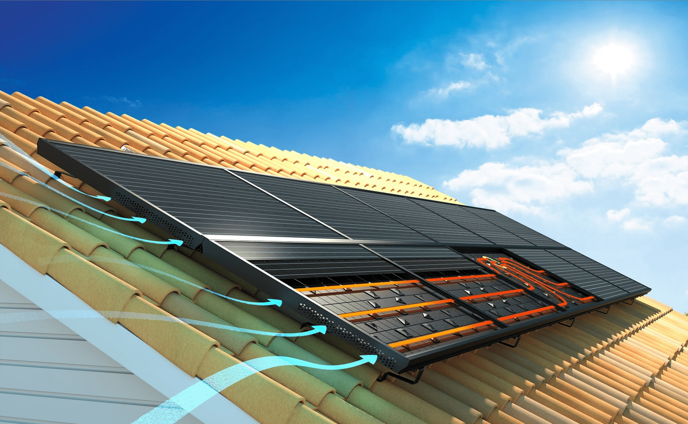

Les installations solaires aérovoltaïques sont des installations solaires hybrides utilisant l'air comme fluide caloporteur

Avantages
- Peut aussi servir au rafraichissement ET à la ventilation
- Air peu cher et non polluant
- + avantages des autres panneaux hybride
Inconvenients
- On cherche
Où en acheter ?
Je conseille les installations aérovoltaïques R-Volt, de Systovi